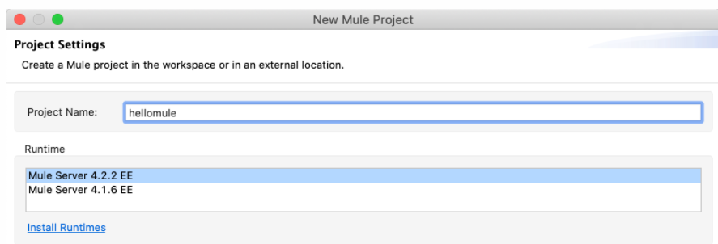

Hello Mule
1、hello mule整体布局
安装 Anypoint Studio 后，可以设置并运行示例。
2、案例讲解
Hello Mule 示例包含一个简单的 Mule 流程。此Flow接受 HTTP 请求，在消息上设置静态payload，然后向您返回响应。
入站 HTTP 端点接收提交给 Web 服务的请求。HTTP 端点负责接收和返回消息，因为消息交换模式是请求-响应。
顾名思义，Set Payload 组件在payload中设置一个值。在此示例中，该值使用 DataWeave 表达式在payload上设置静态字符串。
3、 案例步骤
按照以下步骤在您自己的 Anypoint Studio 实例中创建示例。请注意，您可以在 Anypoint Studio 中创建模板应用程序并调整基于用例的模板的配置以在 Mule 中创建您自己的自定义应用程序。
1. 在 Anypoint Studio 中创建一个名为 的项目hellomule：
（1）. 选择File > New > Mule Project，并 在打开的对话框中提供项目名称“hellomule”：

请注意，项目名称不包含任何空格。
（2）. 单击完成。
2. 将 HTTP Listener 组件拖到 hellomule画布上：
（1）. 在项目的Mule Palette选项卡中，单击HTTP：
（2）. 将Listener组件拖入hellomuleFlow画布：
 如果Listener选项卡中的配置 UI未打开，请单击 画布中的Listener组件将其打开。
请注意，选项卡中的红色框之所以存在，是因为 连接器配置和路径字段需要值。
3. 从Listener选项卡配置Listener组件：
（1）. 在侦听器的Path字段中，输入 path /hellomule。
（2）. 找到并单击侦听器的连接器配置字段旁边的绿色加号图标 ( + ) 以打开HTTP 侦听器配置对话框。
（3）. 在对话框中，通过单击Test Connection来检查默认侦听器配置 ：
如果连接成功，您会看到消息“测试连接成功！” 在弹出的测试连接对话框中。
如果连接失败，请尝试使用未使用的端口号，例如 8082或8083，重新测试连接，然后添加配置。
（4）. 单击“确定”向项目添加工作配置。
4. 从Mule Palette选项卡中，单击Core，然后找到一个Set Payload 组件并将其拖到画布的Process区域：
如果找不到Set Payload组件，请尝试使用Mule Palette选项卡顶部的搜索字段 。
如果Set Payload选项卡中的配置 UI未打开，请单击 Set Payload组件以打开其配置 UI。
5. 在set payload组件的value区域，取消勾选 fx域，并输入字符串 “Hello Mule”。
取消选择fx域时，则输入的value值只包含"Hello Mule"，不包含#和[]。
6. 从Mule Palette选项卡中，单击Core，然后找到一个Logger 组件并将其拖到Transform Message 组件的右侧。
如果Listener选项卡中的配置 UI未打开，请单击 画布中的Listener组件将其打开。
请注意，选项卡中的红色框之所以存在，是因为 连接器配置和路径字段需要值。
3. 从Listener选项卡配置Listener组件：
（1）. 在侦听器的Path字段中，输入 path /hellomule。
（2）. 找到并单击侦听器的连接器配置字段旁边的绿色加号图标 ( + ) 以打开HTTP 侦听器配置对话框。
（3）. 在对话框中，通过单击Test Connection来检查默认侦听器配置 ：
如果连接成功，您会看到消息“测试连接成功！” 在弹出的测试连接对话框中。
如果连接失败，请尝试使用未使用的端口号，例如 8082或8083，重新测试连接，然后添加配置。
（4）. 单击“确定”向项目添加工作配置。
4. 从Mule Palette选项卡中，单击Core，然后找到一个Set Payload 组件并将其拖到画布的Process区域：
如果找不到Set Payload组件，请尝试使用Mule Palette选项卡顶部的搜索字段 。
如果Set Payload选项卡中的配置 UI未打开，请单击 Set Payload组件以打开其配置 UI。
5. 在set payload组件的value区域，取消勾选 fx域，并输入字符串 “Hello Mule”。
取消选择fx域时，则输入的value值只包含"Hello Mule"，不包含#和[]。
6. 从Mule Palette选项卡中，单击Core，然后找到一个Logger 组件并将其拖到Transform Message 组件的右侧。
 如果找不到Logger组件，请尝试使用Mule Palette选项卡顶部的搜索字段 。
如果Listener选项卡中的配置 UI未打开，请单击 画布中的Logger组件将其打开。
7. 在Logger的Message字段中，单击fx按钮，并添加以下 DataWeave 表达式以将请求路径打印到 Anypoint Studio 控制台：
attributes.requestPath
8. 通过从 Anypoint Studio选择文件>保存来保存项目。
如果找不到Logger组件，请尝试使用Mule Palette选项卡顶部的搜索字段 。
如果Listener选项卡中的配置 UI未打开，请单击 画布中的Logger组件将其打开。
7. 在Logger的Message字段中，单击fx按钮，并添加以下 DataWeave 表达式以将请求路径打印到 Anypoint Studio 控制台：
attributes.requestPath
8. 通过从 Anypoint Studio选择文件>保存来保存项目。
4、 运行Hello Mule案例
在 Anypoint Studio 中设置好 Hello Mule 后，您可以运行并测试它。
1. 通过在 Anypoint Studio 画布中右键单击并选择Run project hellomule来运行您的hellomule应用程序。
 或者，您可以单击运行按钮位于 Anypoint Studio 顶部的运行按钮 ( )，然后从打开的下拉菜单中选择hellomule。
任一操作都会启动构建过程并打开 Anypoint Studio 控制台，日志会在其中打印有关两阶段构建和部署过程的重要信息。
如果您在 Anypoint Studio 控制台中看到一条类似以下内容的消息，则说明项目正在运行：
如果您在控制台中收到失败通知 FAILED 而不是DEPLOYED通知，请检查错误消息。
如果您看到如下消息，请尝试在 HTTP 侦听器配置中设置新的 HTTP 端口：
或者，您可以单击运行按钮位于 Anypoint Studio 顶部的运行按钮 ( )，然后从打开的下拉菜单中选择hellomule。
任一操作都会启动构建过程并打开 Anypoint Studio 控制台，日志会在其中打印有关两阶段构建和部署过程的重要信息。
如果您在 Anypoint Studio 控制台中看到一条类似以下内容的消息，则说明项目正在运行：
如果您在控制台中收到失败通知 FAILED 而不是DEPLOYED通知，请检查错误消息。
如果您看到如下消息，请尝试在 HTTP 侦听器配置中设置新的 HTTP 端口：
 然后保存并重新运行您的项目。请注意，如果故障仍然存在，您也可以尝试将主机更改为localhost。
2. 应用程序运行后，打开浏览器窗口，输入监听器的 URL 以触发应用程序：
您必须使用与 HTTP 侦听器中配置的相同的主机和端口，例如http://0.0.0.0:8081/hellomule.
3. 检查Hello Mule!浏览器中的消息
4. 在 Anypoint Studio 中，请注意控制台选项卡中的消息在第一行 ( )/hellomule的末尾包含请求路径INFO( org.mule.runtime.core.internal.processor.LoggerMessageProcessor: /hellomule)。
然后保存并重新运行您的项目。请注意，如果故障仍然存在，您也可以尝试将主机更改为localhost。
2. 应用程序运行后，打开浏览器窗口，输入监听器的 URL 以触发应用程序：
您必须使用与 HTTP 侦听器中配置的相同的主机和端口，例如http://0.0.0.0:8081/hellomule.
3. 检查Hello Mule!浏览器中的消息
4. 在 Anypoint Studio 中，请注意控制台选项卡中的消息在第一行 ( )/hellomule的末尾包含请求路径INFO( org.mule.runtime.core.internal.processor.LoggerMessageProcessor: /hellomule)。